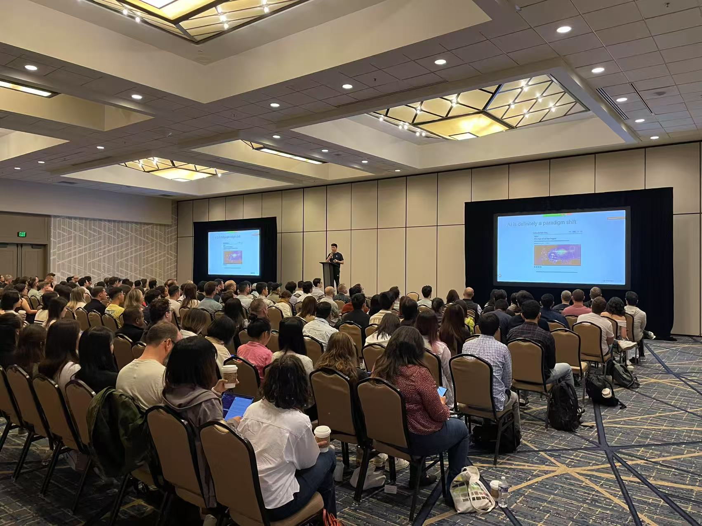

The Third Interface for Investment Research
Natural language is becoming the way PMs dispatch compute, tools, and context into better judgment.
Bill Gates puts AI in a category with only one earlier technology. What was it?
Not the internet. Not mobile. Not cloud.

GUI changed who could operate compute. AI changes what can be commanded by language.
Command line
Powerful, general, gated by programming fluency.
GUI
Software became operable through windows, icons, menus, and the mouse.
Natural language
General-purpose work becomes accessible through instruction, context, and tools.
For PMs, the new skill is commanding work that used to require manual coordination.
Encode judgment
Source hierarchy, variant lens, quality standard, action threshold.
Dispatch compute
Retrieve, analyze, draft, schedule, notify, package, rerun.
Compound capability
Artifacts and context become reusable systems instead of one-off answers.
Meta, Amazon, Tencent. Statsig to OpenAI. 3,000+ AI Builders.

From interface shift to PM operating system.
Natural language only matters when it becomes a dispatch layer.
The course starts with daily work because it is the fastest path from interface shift to operating habit.
The third interface lowers the barrier for general-purpose work.
New interface. Old workflow. Limited leverage.


Daily work is the wedge into compounding AI capability.
Meetings, notes, follow-ups, reviews: ordinary surfaces with high leverage because they repeat.
Actions
Action items move from transcript to calendar, email, owner, and follow-up.
Opportunities
Repeated themes across meetings, notes, and calls become visible before they disappear.
Context
Useful work leaves a trace: people, sources, decisions, tags, and reusable patterns.
Chat keeps the human as middleware.
1. Follow-through
The answer arrives. Calendar, email, owner, and check-in still depend on manual discipline.
2. Context supply
Every session starts with re-briefing goals, constraints, prior decisions, and quality standards.
3. Memory
Useful work sits in chat history instead of becoming a file, checklist, artifact, or context row.
Agentic AI turns language into a closed-loop workflow.
The market signal is workflow redesign, not AI enthusiasm.
Developers are the lead market because their work already has files, tools, tests, and review loops. The lesson for Dymon is the operating pattern.
Cursor shows how quickly a profession can move to a new work surface.
| Milestone | Reported ARR / valuation | Why it matters |
|---|---|---|
| Jan 2025 | $100M ARR | Reached a scale prior SaaS category leaders took materially longer to achieve. |
| Jun 2025 | $500M ARR; $9.9B valuation | Enterprise and individual developer adoption moved in parallel. |
| Nov 2025 | $1B+ ARR; $29.3B valuation | AI-native workflow products compressed the traditional B2B growth curve. |
| 2026 reports | $2B ARR; $50B talks | The market is pricing workflow capture beyond seat-based software. |
Claude Code shows the work pattern behind the productivity jump.
Real production work
Anthropic says the majority of its own code is now written by Claude Code.
Closed-loop execution
The agent reads the codebase, edits files, runs tests, handles errors, and iterates toward a shippable result.
Human quality control
Strong users specify outcomes, inspect diffs, tighten tests, evaluate failures, and preserve reusable patterns.
The second signal: serious companies are turning AI into an operating rule.
| Signal | What changed | Why it matters to Dymon |
|---|---|---|
| Goldman Sachs | Autonomous engineering agents move from experiment to supervised enterprise adoption. | High-stakes work needs access control, review paths, provenance, rollback, and accountability. |
| Shopify | AI proficiency enters headcount and resource-allocation decisions. | AI fluency becomes a management expectation, not a side hobby. |
| Block | Management attention shifts from hierarchy as routing to shared intelligence layers. | The deeper change is coordination and work design, not a software rollout. |
The course is designed to close the capability gap.
The goal is not AI awareness. It is helping PMs work closer to the standard already visible inside AI-native teams.
Five gaps separate chat use from real PM leverage.
| Gap | Chat-mode experience | Course target |
|---|---|---|
| 1. Usable output | Polished summary, weak stance, heavy rewrite. | Clear view, memo fit, explicit judgment dimensions, next action. |
| 2. Quality diagnosis | Changes prompt or model on instinct. | Diagnose context, work mode, prompt, tool access, and model limits separately. |
| 3. Full-task delegation | Human watches every step and becomes the pipeline. | One sentence delegates a work loop; the agent retrieves, acts, checks, and reports back. |
| 4. Compounding memory | Last week's tuning disappears into chat history. | Personal and team context accumulate; new work inherits prior judgment. |
| 5. New capability | AI accelerates existing workflow. | AI captures missed actions, monitors thesis drift, and creates follow-up systems. |
We teach the verbs of the craft.
Noun learning
Model names, tools, features, RAG, MCP, agents, benchmarks. Useful vocabulary, still upstream of capability.
- Sounds current in meetings
- Often becomes tool-chasing
- Rarely changes output quality by itself
Verb learning
Specify, decompose, delegate, inspect, test, revise, document, reuse. This is where the leverage lives.
- Turns AI from answer box into worker
- Creates reusable assets and judgment systems
- Transfers across models and tools
Jay's Excel analogy says three things at once.
1. Table stakes
Excel fluency became a baseline business skill. AI fluency is moving into the same category for people who make decisions from information.
2. Learnable
Business people learned Excel without becoming software engineers: real work, repetition, feedback, and templates.
3. Deep craft
Opening Excel is easy; modeling well is hard. AI is similar: easy to start, but strong users compound a much larger advantage.
Three sessions move PMs from AI user to workflow builder.
Run a complete work loop.
Specify outcomes, context, owners, and quality standards on real Dymon-adjacent tasks.
Package judgment as context.
Distill source hierarchy, recurring patterns, failure modes, and workflow instructions into context files and skills.
Turn work into infrastructure.
Extend the workflow into retrieval, artifact creation, source links, delegation, review, and context capture.
Dymon leaves with the first operating layer.
For PMs, AI has to climb from information to judgment and action.
Now translate the capability into daily investment workflow.
A PM turns available information into a better decision.
PMs get paid for the correct contrarian view.
Naval's useful distinction
The valuable contrarian reasons independently from the ground up under pressure to conform; reflexive disagreement misses the point.
What AI should help with
- Understand the consensus model
- Find the correct contrarian view
- Turn it into a tradeable decision

Coverage helps. Context moves AI into judgment.
One-off research
Comprehensive retrieval, source synthesis, consensus framing, and polished summary.
- Good for coverage
- Often balanced and plausible
- Weak on desk-specific judgment and action
Context-aware workflow
Work executed inside a PM's source hierarchy, variant lens, mechanisms, failure modes, and action standards.
- Filters what matters now
- Tests the correct contrarian view
- Connects evidence to decisions and follow-up
Context is the operating system of judgment.
| Context layer | What it contains | What it changes in output |
|---|---|---|
| Source hierarchy | Which evidence types carry weight by market, sector, and situation. | Prevents all sources from being flattened into equal prose. |
| World model | How industry mechanisms, macro drivers, competition, and policy connect. | Moves from listing facts to causal reasoning. |
| Variant lens | What consensus tends to miss or over-discount in a coverage area. | Forces a view instead of a balanced summary. |
| Action standard | What makes an insight tradeable: catalyst, timing, sizing, risk, monitor. | Connects research output to decision quality. |
The demo is simple on purpose: watch the work move.
Yan will show the details. The real learning is the operating pattern.
1. Language dispatches tools
A meeting action turns into calendar, email, Docs, and notification without the PM becoming the pipeline.
2. Context changes the output
The system retrieves the right notes, SOPs, prior feedback, and standards before it creates the artifact.
3. Work leaves memory
The transcript and artifacts become structured rows that can be filtered, reused, and promoted into team context.